Student Internship & Job Application Management System
Module 2: Job Management & Module 3: Application Tracking
Samin Sarwat (A22EC4040)
SECJ3483 Web Technology — Group Project — Team CHAMPION
This module lets admins post job listings for students to browse. Think of it like a job board.
In short: admins manage the job board, students browse it.
This module lets students apply for jobs and admins track those applications. Think of it like an application tracker.
In short: students apply and track, admins review and decide.
These are the files I wrote for M2 and M3 — everything else was built by my teammates.
CareerBridge/
│
├── backend/
│ └── src/
│ └── Modules/
│ ├── Jobs/ M2
│ │ └── JobController.php ← Full CRUD: list, detail, create, update, soft-delete
│ │ (GET, POST, PUT, DELETE /api/jobs)
│ │
│ └── Applications/ M3
│ └── ApplicationController.php ← Apply, list (role-aware), update status, withdraw
│ (GET, POST, PUT, DELETE /api/applications)
│
├── frontend/
│ └── src/
│ └── views/
│ ├── BrowseJobs.vue M2 ← Student: browse + search + filter + apply modal
│ ├── JobDetail.vue M2 ← Student: full job detail page
│ ├── ManageJobs.vue M2 ← Admin: create, edit, deactivate jobs
│ ├── MyApplications.vue M3 ← Student: track applications + withdraw
│ └── ManageApplications.vue M3 ← Admin: review + change application status
│
└── database/
├── schema.sql ← I designed the `jobs` and `applications` tables
└── seed.sql ← I wrote seed data for jobs and applicationsbackend/src/Modules/Jobs/JobController.php → M2backend/src/Modules/Applications/ApplicationController.php → M3frontend/src/views/BrowseJobs.vue + ManageJobs.vue → M2 Frontendfrontend/src/views/MyApplications.vue + ManageApplications.vue → M3 Frontend
->add(new JwtMiddleware(['admin', 'superadmin'])) — Only admins can create/edit/delete jobs->add(new JwtMiddleware('student')) — Only students can apply & withdraw
CREATE TABLE jobs (
job_id INT AUTO_INCREMENT PRIMARY KEY,
company_id INT NOT NULL,
posted_by INT NOT NULL,
title VARCHAR(150) NOT NULL,
type ENUM('internship','fulltime',
'parttime') NOT NULL,
description TEXT NOT NULL,
requirements TEXT,
deadline DATE NOT NULL,
is_active TINYINT(1) DEFAULT 1,
created_at TIMESTAMP DEFAULT
CURRENT_TIMESTAMP,
FOREIGN KEY (company_id)
REFERENCES companies(company_id),
FOREIGN KEY (posted_by)
REFERENCES users(user_id)
);CREATE TABLE applications (
application_id INT AUTO_INCREMENT
PRIMARY KEY,
job_id INT NOT NULL,
user_id INT NOT NULL,
cover_letter TEXT,
status ENUM('pending','reviewed',
'accepted','rejected')
DEFAULT 'pending',
applied_at TIMESTAMP DEFAULT
CURRENT_TIMESTAMP,
FOREIGN KEY (job_id)
REFERENCES jobs(job_id),
FOREIGN KEY (user_id)
REFERENCES users(user_id),
UNIQUE KEY uniq_job_user
(job_id, user_id)
);UNIQUE (job_id, user_id) — a student cannot apply to the same job twice. Foreign keys link jobs → companies and jobs → users (who posted it).
-- 1. Open MySQL and select the database
mysql -u root
USE careerbridge;
-- 2. Show all tables
SHOW TABLES;
-- 3. See the structure of my tables (M2 + M3)
DESCRIBE jobs;
DESCRIBE applications;
-- 4. See the data inside my tables
SELECT * FROM jobs;
SELECT * FROM applications;
-- 5. Show how tables connect (jobs + companies)
SELECT j.job_id, j.title, j.type, c.name AS company,
j.deadline, j.is_active
FROM jobs j
JOIN companies c ON c.company_id = j.company_id;
-- 6. Show applications with student + job info
SELECT a.application_id, u.full_name AS student,
j.title AS job, a.status, a.applied_at
FROM applications a
JOIN users u ON u.user_id = a.user_id
JOIN jobs j ON j.job_id = a.job_id;
-- 7. Count applications by status (powers the admin chart)
SELECT status, COUNT(*) AS count
FROM applications GROUP BY status;mysql -u root -e "USE careerbridge; SHOW TABLES; SELECT * FROM jobs LIMIT 5; SELECT * FROM applications LIMIT 5;"
Password for all accounts: Password123!
| Role | What to Show | |
|---|---|---|
| Student | samin@student.utm.my | Browse jobs, apply, my applications, profile |
| Admin | farizal@careerbridge.my | Dashboard, manage jobs, manage applications, companies |
| Super Admin | superadmin@careerbridge.my | Everything admin + users page |
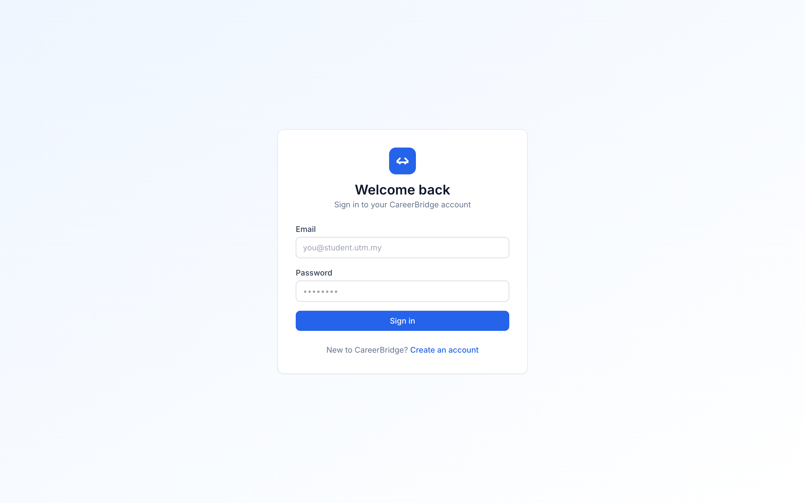
Frontend validates email format + password length before sending POST /api/auth/login. JWT token is returned and stored in localStorage.
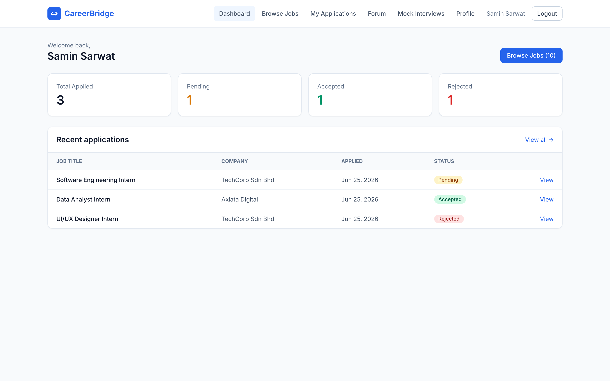
Shows application stats (total, pending, accepted, rejected) and 5 most recent applications.
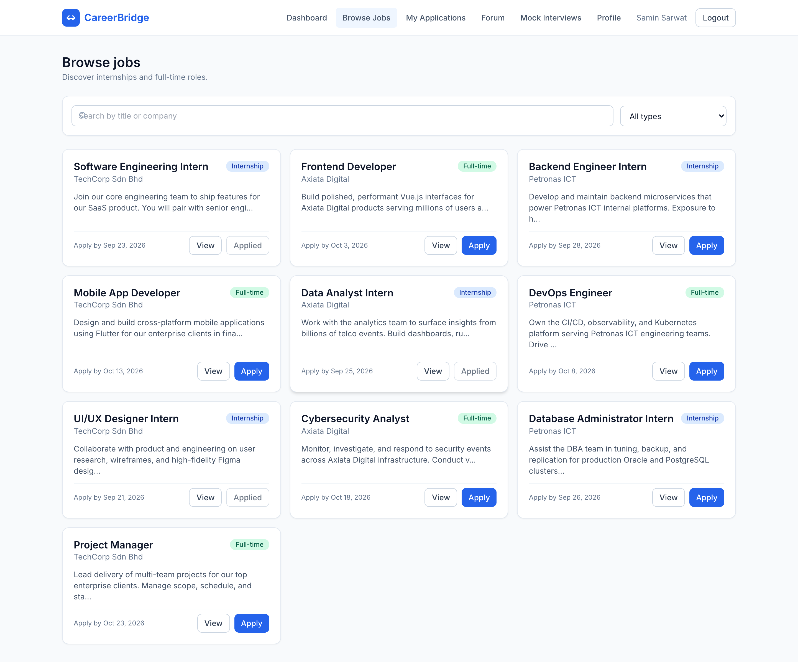
GET /api/jobs loads all active jobs. Each card shows title, company, type badge, short description, and deadline.
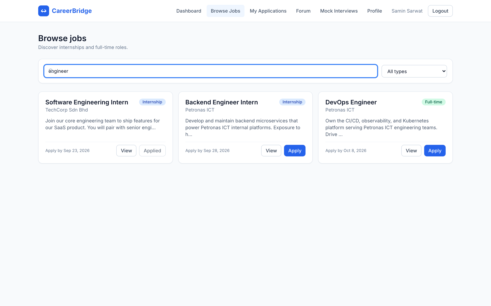
Search box with 400ms debounce — filters by title or company name.
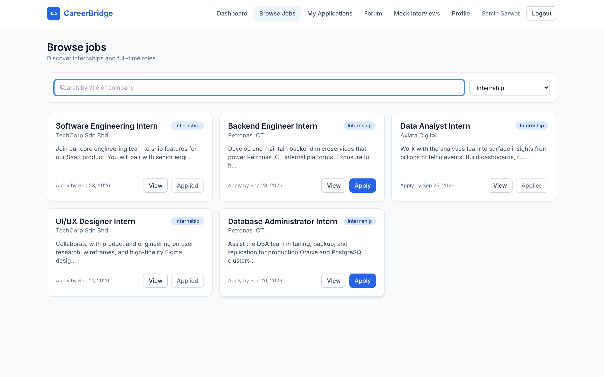
Dropdown filters by type: internship, full-time, part-time. Updates grid reactively.
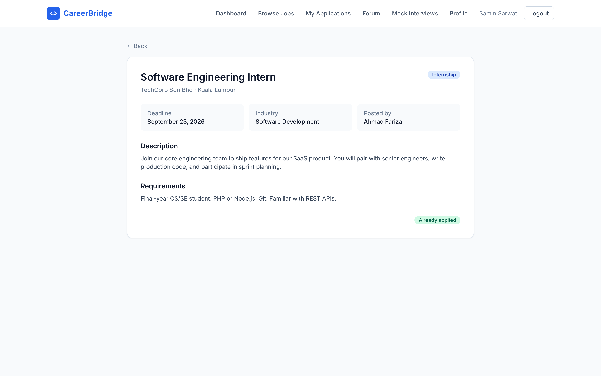
GET /api/jobs/{id} — Shows full description, requirements, deadline, and company info.
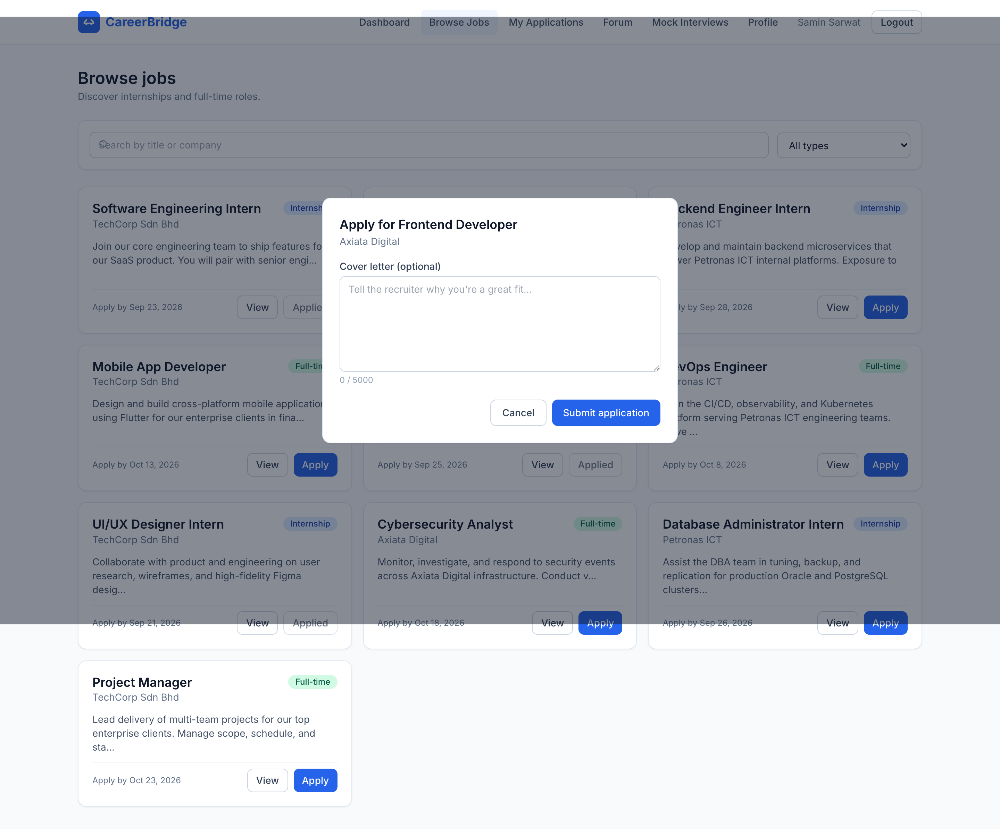
Click "Apply" opens a modal with optional cover letter.
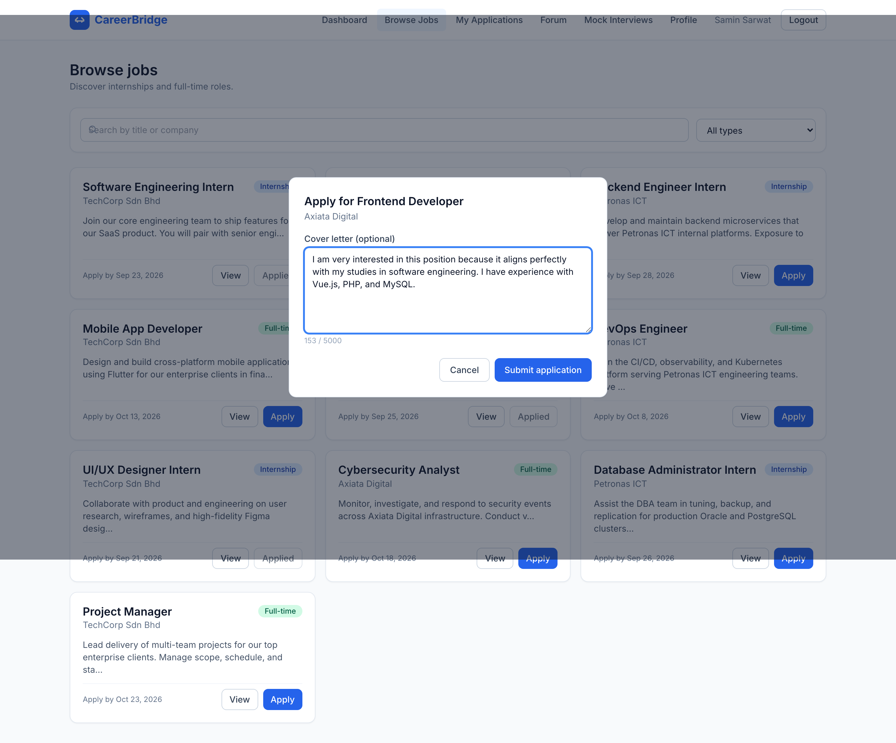
Student writes a cover letter (max 5000 chars).
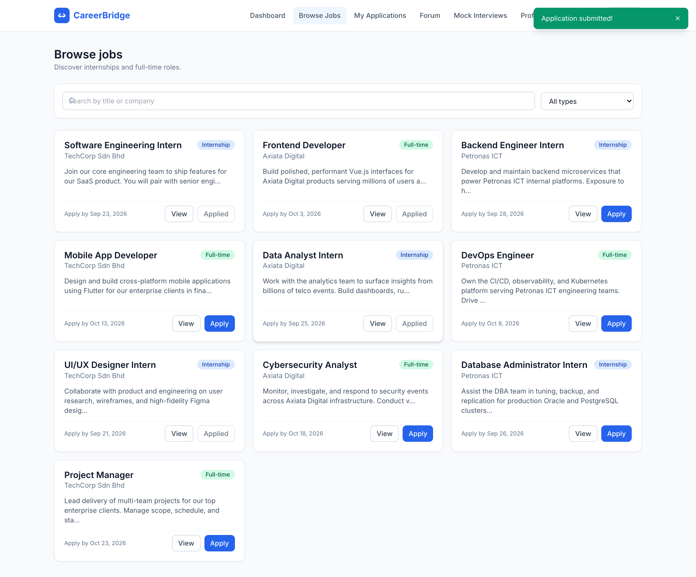
POST /api/applications — Backend checks: job exists, job active, not already applied (409 if duplicate). Toast confirms success.
public function create(Request $request, Response $response): Response
{
$payload = (array) $request->getAttribute('jwt_payload');
$userId = (int) ($payload['user_id'] ?? 0);
$body = $this->readJson($request);
$jobId = (int) ($body['job_id'] ?? 0);
// 1. Validate input
if ($jobId <= 0) {
return Json::write($response, 400, [
'success' => false,
'message' => 'Validation failed.',
'errors' => ['job_id' => 'job_id is required.'],
]);
}
// 2. Check job exists and is active
$stmt = $pdo->prepare('SELECT job_id, is_active FROM jobs WHERE job_id = :id');
$stmt->execute([':id' => $jobId]);
$job = $stmt->fetch(PDO::FETCH_ASSOC);
if (!$job) return Json::write($response, 404, [...]);
if ((int) $job['is_active'] !== 1) return Json::write($response, 400, [...]);
// 3. Check not already applied (prevent duplicates)
$stmt = $pdo->prepare(
'SELECT application_id FROM applications
WHERE job_id = :jid AND user_id = :uid LIMIT 1'
);
$stmt->execute([':jid' => $jobId, ':uid' => $userId]);
if ($stmt->fetch()) {
return Json::write($response, 409, [
'success' => false,
'message' => 'You have already applied for this job.',
]);
}
// 4. Insert application with PDO prepared statement
$stmt = $pdo->prepare(
'INSERT INTO applications (job_id, user_id, cover_letter, status)
VALUES (:jid, :uid, :cl, "pending")'
);
$stmt->execute([
':jid' => $jobId, ':uid' => $userId,
':cl' => $coverLetter !== '' ? $coverLetter : null,
]);
return Json::write($response, 201, [
'success' => true,
'message' => 'Application submitted.',
]);
}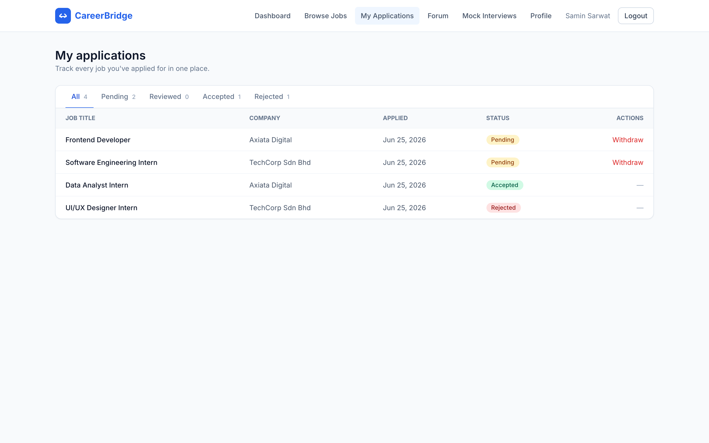
GET /api/applications — Students see only their own. Tabs filter by status. Can withdraw pending applications.
public function delete(Request $request, Response $response, array $args): Response
{
$id = (int) ($args['id'] ?? 0);
$payload = (array) $request->getAttribute('jwt_payload');
$userId = (int) ($payload['user_id'] ?? 0);
$stmt = $pdo->prepare(
'SELECT user_id, status FROM applications
WHERE application_id = :id LIMIT 1'
);
$stmt->execute([':id' => $id]);
$row = $stmt->fetch(PDO::FETCH_ASSOC);
// 1. Not found → 404
if (!$row) return Json::write($response, 404, [...]);
// 2. Not your application → 403 Forbidden
if ((int) $row['user_id'] !== $userId) {
return Json::write($response, 403, [
'success' => false,
'message' => 'You can only withdraw your own applications.',
]);
}
// 3. Already processed → 400 (only pending can be withdrawn)
if ($row['status'] !== 'pending') {
return Json::write($response, 400, [
'success' => false,
'message' => 'Only pending applications can be withdrawn.',
]);
}
// 4. Hard delete from database
$stmt = $pdo->prepare('DELETE FROM applications WHERE application_id = :id');
$stmt->execute([':id' => $id]);
return Json::write($response, 200, [
'success' => true,
'message' => 'Application withdrawn.',
]);
}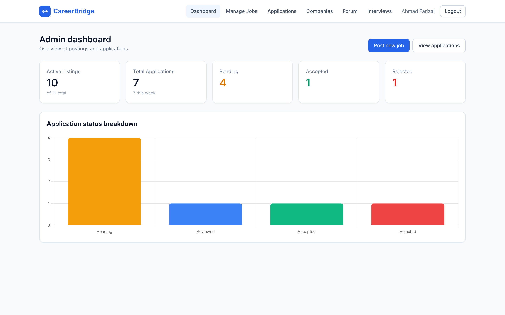
GET /api/admin/analytics — Stats + Chart.js bar chart showing application status breakdown.
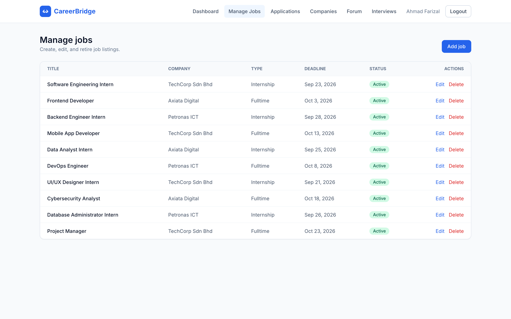
Admin sees all jobs with Edit and Delete (deactivate) buttons. Full CRUD interface.
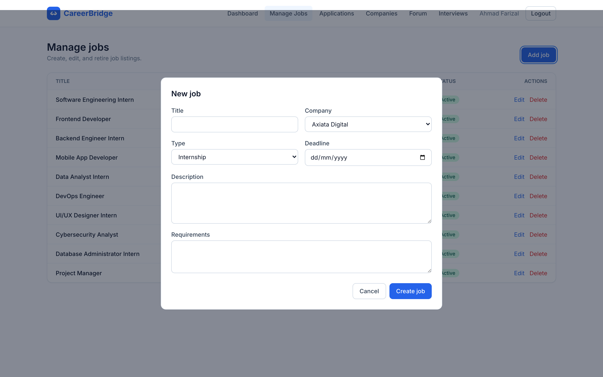
Empty form: title, company dropdown, type, deadline, description, requirements.
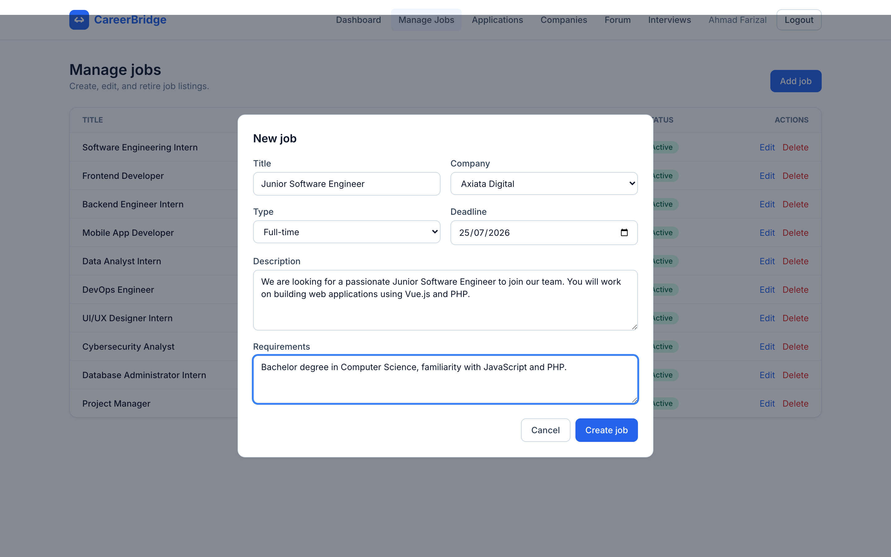
Frontend validates: required fields, future deadline. Backend validates again.
public function create(Request $request, Response $response): Response
{
$body = $this->readJson($request);
$payload = (array) $request->getAttribute('jwt_payload');
// Validate all fields
$errors = $this->validate($body);
if (!empty($errors)) {
return Json::write($response, 400, [
'success' => false,
'message' => 'Validation failed.',
'errors' => $errors,
]);
}
// Insert using PDO prepared statements (SQL injection safe)
$pdo = Database::getConnection();
$stmt = $pdo->prepare(
'INSERT INTO jobs (company_id, posted_by, title, type,
description, requirements, deadline, is_active)
VALUES (:cid, :uid, :title, :type,
:descr, :req, :deadline, 1)'
);
$stmt->execute([
':cid' => (int) $body['company_id'],
':uid' => (int) $payload['user_id'],
':title' => $body['title'],
':type' => $body['type'],
':descr' => $body['description'],
':req' => $body['requirements'] ?? null,
':deadline' => $body['deadline'],
]);
$id = (int) $pdo->lastInsertId();
return Json::write($response, 201, [
'success' => true,
'message' => 'Job created.',
'data' => $row,
]);
}public function delete(Request $request, Response $response, array $args): Response
{
$id = (int) ($args['id'] ?? 0);
// Check job exists
$stmt = $pdo->prepare('SELECT job_id FROM jobs WHERE job_id = :id');
$stmt->execute([':id' => $id]);
if (!$stmt->fetch()) {
return Json::write($response, 404, [
'success' => false,
'message' => 'Job not found.',
]);
}
// Soft delete: set is_active = 0 (NOT a real DELETE)
$stmt = $pdo->prepare(
'UPDATE jobs SET is_active = 0 WHERE job_id = :id'
);
$stmt->execute([':id' => $id]);
return Json::write($response, 200, [
'success' => true,
'message' => 'Job deactivated.',
]);
}WHERE is_active = 1).
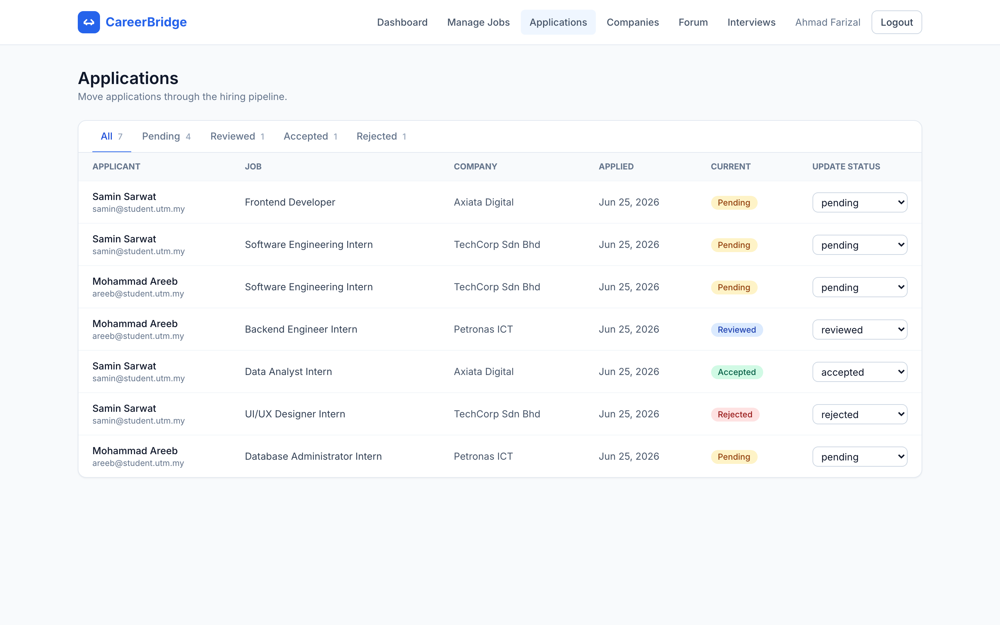
Admins see ALL applications. Dropdown changes status via PUT /api/applications/{id}/status. Uses optimistic update — UI updates instantly, rolls back on error.
public function updateStatus(Request $request, Response $response, array $args): Response
{
$id = (int) ($args['id'] ?? 0);
$body = $this->readJson($request);
$status = trim((string) ($body['status'] ?? ''));
// Validate status value
if (!in_array($status, ['pending', 'reviewed',
'accepted', 'rejected'], true)) {
return Json::write($response, 400, [
'success' => false,
'message' => 'Validation failed.',
'errors' => ['status' =>
'Status must be pending, reviewed, accepted or rejected.'],
]);
}
// Check application exists
$stmt = $pdo->prepare(
'SELECT application_id FROM applications
WHERE application_id = :id LIMIT 1'
);
$stmt->execute([':id' => $id]);
if (!$stmt->fetch()) {
return Json::write($response, 404, [
'success' => false,
'message' => 'Application not found.',
]);
}
// Update status
$stmt = $pdo->prepare(
'UPDATE applications SET status = :s
WHERE application_id = :id'
);
$stmt->execute([':s' => $status, ':id' => $id]);
return Json::write($response, 200, [
'success' => true,
'message' => 'Status updated.',
'data' => ['application_id' => $id, 'status' => $status],
]);
}// Load jobs + check which ones student already applied to
onMounted(async () => {
const [jobsRes, appsRes] = await Promise.all([
api.get('/jobs'),
api.get('/applications').catch(() => ({ data: { data: [] } }))
])
jobs.value = jobsRes.data?.data ?? []
appliedJobIds.value = new Set(
(appsRes.data?.data ?? []).map(a => Number(a.job_id))
)
})
// Debounced search (400ms delay)
watch(search, (val) => {
clearTimeout(debounceTimer)
debounceTimer = setTimeout(() => {
debouncedQ.value = val.trim().toLowerCase()
}, 400)
})
// Filtered results (reactive computed)
const filteredJobs = computed(() => {
return jobs.value.filter(j => {
if (typeFilter.value !== 'all' && j.type !== typeFilter.value)
return false
if (debouncedQ.value === '') return true
return `${j.title} ${j.company_name}`
.toLowerCase().includes(debouncedQ.value)
})
})
// Submit application
async function submitApply() {
await api.post('/applications', {
job_id: modalJob.value.job_id,
cover_letter: coverLetter.value.trim()
})
appliedJobIds.value.add(Number(modalJob.value.job_id))
toast.success('Application submitted!')
}// ManageApplications.vue — change status with optimistic update
async function changeStatus(app, newStatus) {
if (newStatus === app.status) return
const previous = app.status
// 1. Optimistic: update UI immediately
const idx = applications.value.findIndex(
a => a.application_id === app.application_id
)
if (idx !== -1)
applications.value[idx] = { ...app, status: newStatus }
try {
// 2. Send API request
await api.put(
`/applications/${app.application_id}/status`,
{ status: newStatus }
)
toast.success(`Status set to ${newStatus}.`)
} catch (err) {
// 3. Rollback on error
if (idx !== -1)
applications.value[idx] = { ...app, status: previous }
toast.error('Could not update status.')
}
}User sees the change instantly. If the API fails, UI rolls back. This makes the app feel fast.
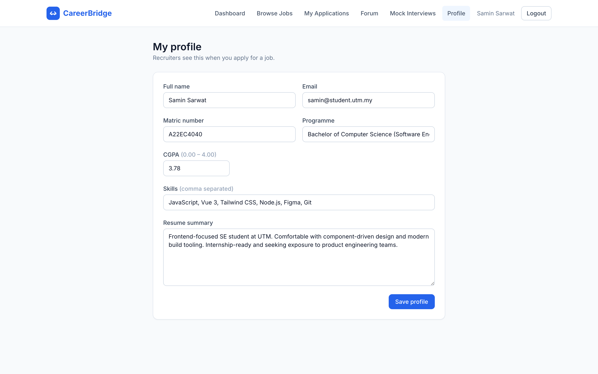
Matric number, programme, CGPA (0.00–4.00), skills, resume text. Uses PUT /api/profile (upsert pattern).
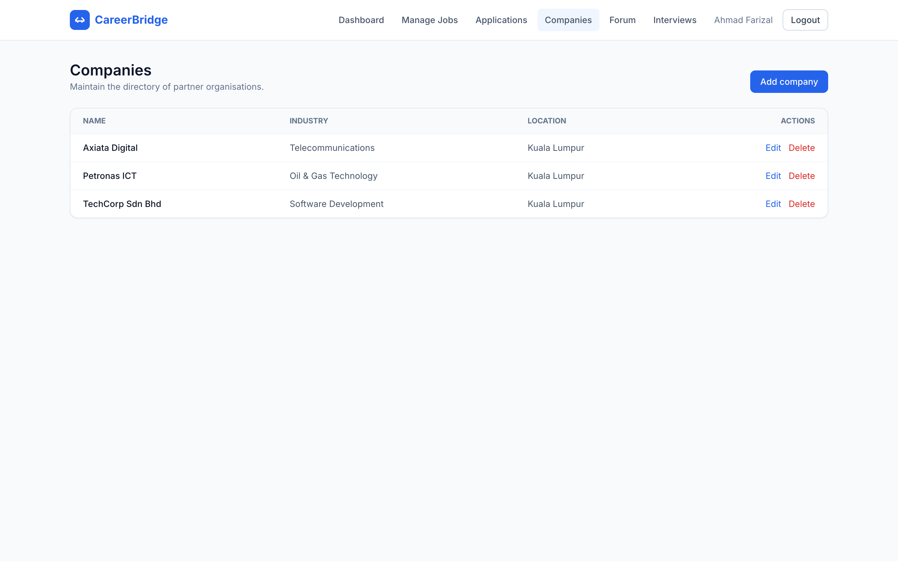
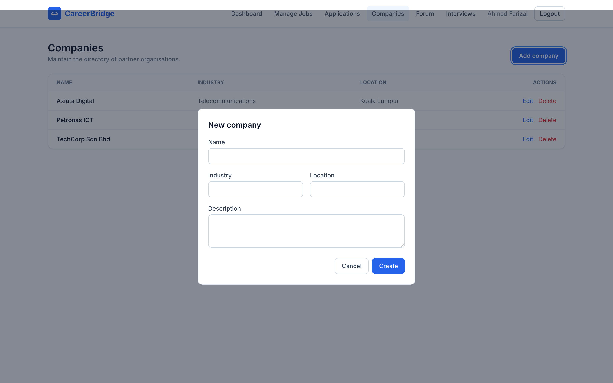
Companies are linked to jobs via foreign key. Cannot delete a company that has jobs attached (returns 400).
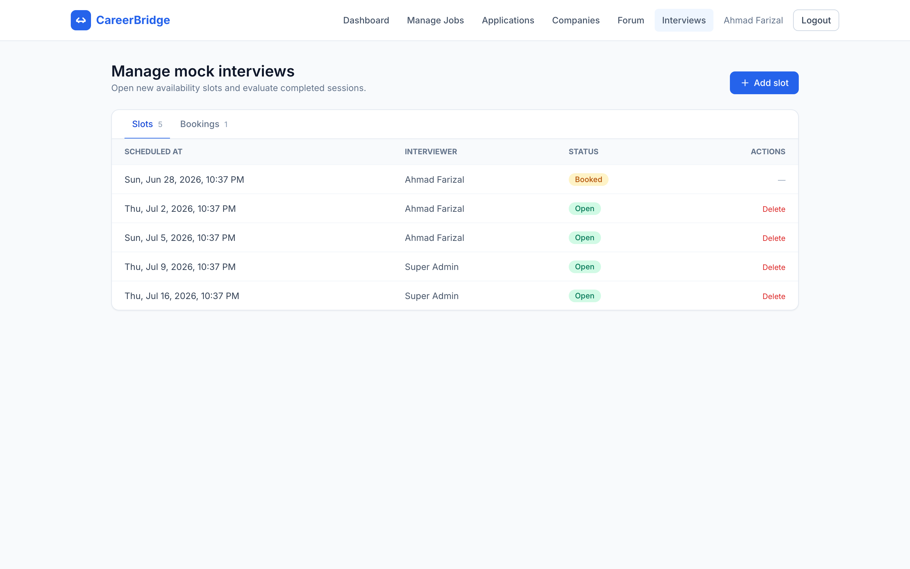
Admin creates slots, students book them, admins evaluate with scores.
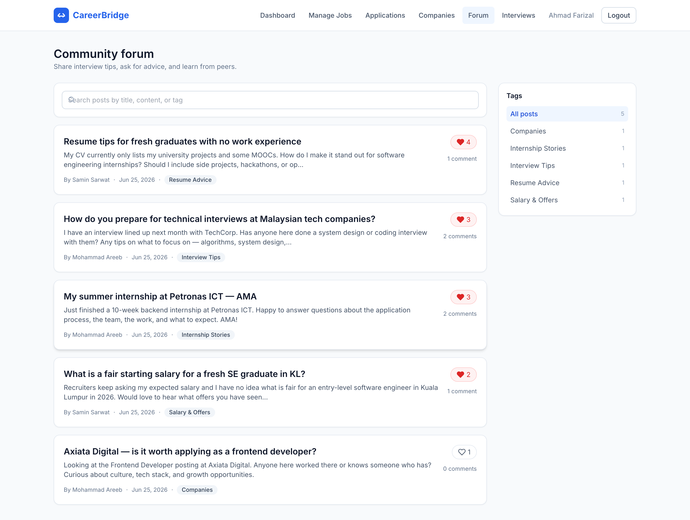
Posts with tags, comments, like toggle. Search and filter by tag.
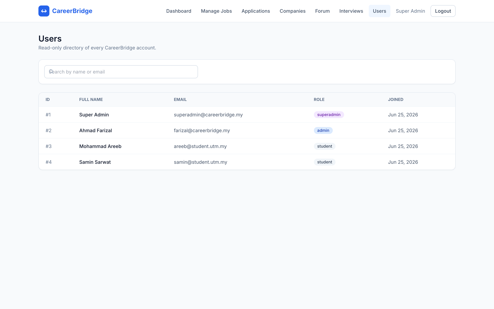
GET /api/admin/users — Only superadmin role can access. Read-only directory of all accounts.
:placeholder syntax, preventing SQL injectionJwtMiddleware(['admin','superadmin']) on create/update/delete// ManageJobs.vue validation
function validate() {
if (!form.company_id)
errors.company_id = 'Company is required.'
if (!form.title.trim())
errors.title = 'Title is required.'
else if (form.title.length > 150)
errors.title = 'Title must be 150 chars or fewer.'
if (!form.description.trim())
errors.description = 'Description is required.'
if (!form.deadline)
errors.deadline = 'Deadline is required.'
else if (form.deadline < todayStr.value)
errors.deadline = 'Deadline must be in the future.'
return Object.values(errors)
.every(v => v === '')
}// JobController::validate()
private function validate(array $body): array
{
$errors = [];
if (empty($body['company_id']))
$errors['company_id'] = 'Required.';
if (empty($body['title']))
$errors['title'] = 'Required.';
elseif (strlen($body['title']) > 150)
$errors['title'] = 'Max 150 chars.';
if (!in_array($body['type'] ?? '',
['internship','fulltime','parttime'], true))
$errors['type'] = 'Invalid type.';
if (empty($body['description']))
$errors['description'] = 'Required.';
if (empty($body['deadline']))
$errors['deadline'] = 'Required.';
return $errors;
}Module 2: Job Management & Module 3: Application Tracking
Samin Sarwat (A22EC4040)
Full CRUD · JWT Authentication · PDO Prepared Statements · Vue.js + PHP Slim 4
Any questions?